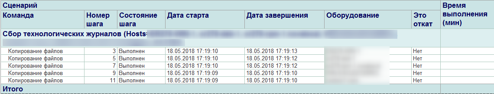

Отчет предназначен для формирования чек-листа экземпляра или нескольких экземпляров сценария.
Отчет может быть сформирован как непосредственно, так и из формы списка экземпляров сценариев по выбранным строкам.

Описание конфигурации "Центр администрирования"